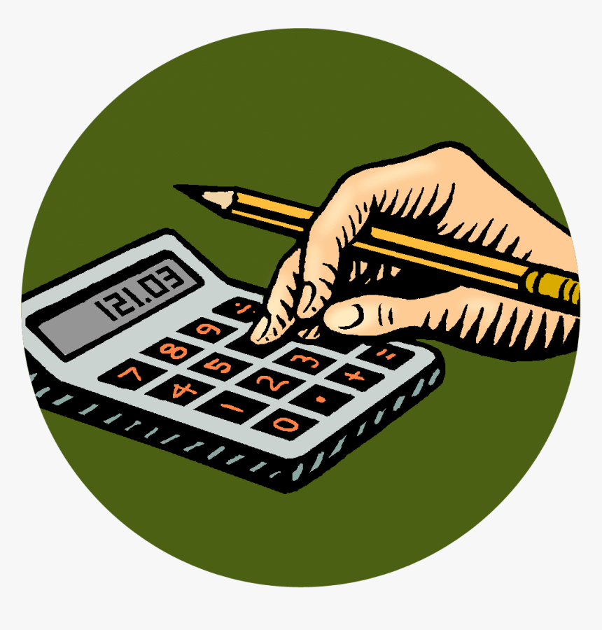
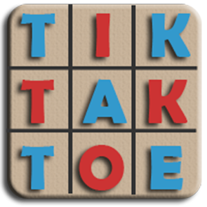
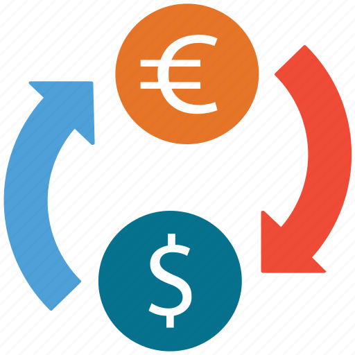
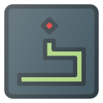

-

Calculator Project
A fully functional calculator built using HTML, CSS, and
JavaScript. It performs basic arithmetic operations like
addition, subtraction, multiplication, and division. The
clean interface and responsive design make it usable on
various screen sizes.
-

Tik Tak Toe Game
A classic two-player Tic Tac Toe game developed using HTML,
CSS, and JavaScript. The game allows players to take turns,
detects the winner, and announces the result. The logic ensures
smooth gameplay, and it's designed for both desktop and mobile users.
-

Rock Paper Scissors Game
A simple and interactive Rock Paper Scissors game, where players
can challenge the computer. Built with HTML, CSS, and JavaScript,
the game tracks scores and provides feedback on who wins each round.
-

Currency Converter Project
This project converts currencies based on live exchange rates,
allowing users to select different currencies and see the conversion
results instantly. Built with a combination of HTML, CSS, and
JavaScript, it demonstrates real-time interaction and data processing.
-

Snake Game
A modern, responsive Snake game built with HTML, CSS and JavaScript.
Control the snake with keyboard or on‑screen buttons, eat food to grow longer,
avoid collisions, and beat your high score across all screen sizes.